60 meslek için doldurulmuş, ücretsiz CV örnekleri ve hazırlama rehberleri. Mesleğini seç, örneği incele, kendi CV'ni MobilCV'de telefondan oluştur.
En çok aranan meslekler en başta. Aradığın mesleği aşağıdaki kutuya yazabilirsin.
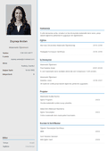
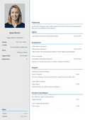
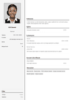
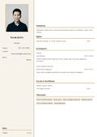
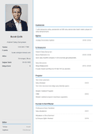
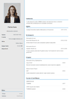
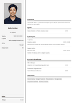
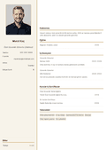
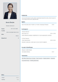
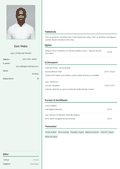
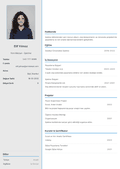
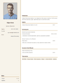
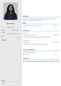
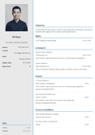
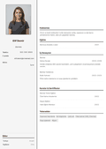
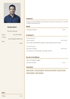
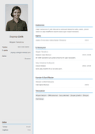
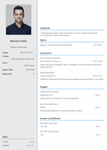
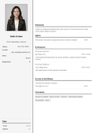
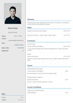
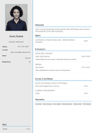
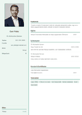
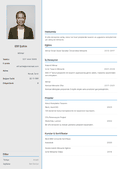
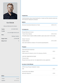
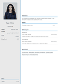
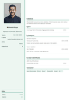
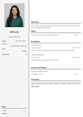
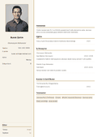
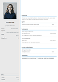
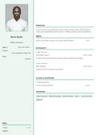
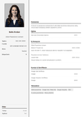
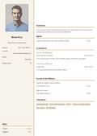
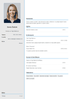
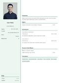
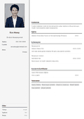
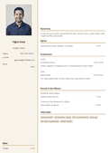
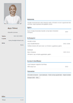
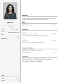
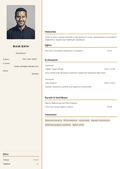
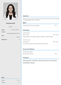
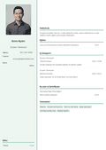
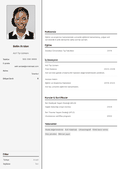
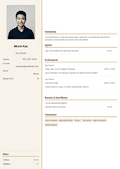
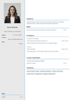
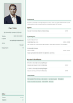
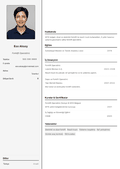
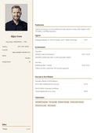
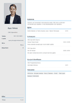
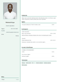
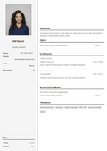
Bu meslek henüz listede yok. Genel bir CV için Yeni Mezun ya da Öğrenci örneğine bakabilirsin.
✨ Mesleğine uygun CV'ni hemen oluştur!
🚀 MobilCV ile CV Oluştur